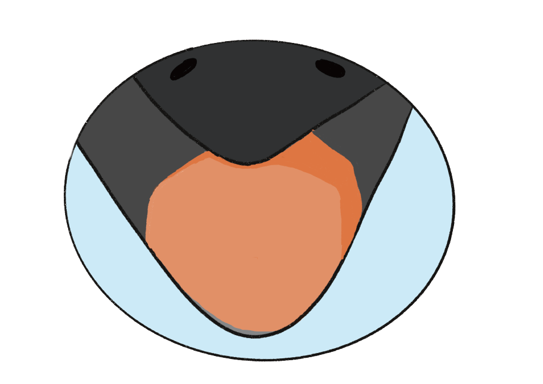

烏鴉喝水
為了想喝到水，聰明的烏鴉於是飛到了遙遠的河邊，叼來了許多小石頭丟進瓶中。在歷經了幾十次辛苦的飛行後，烏鴉終於快可以喝到水了，但這時這隻「聰明」烏鴉卻發現……「X！我剛剛是不是到河邊了！？」呃，其實直接喝河邊的水就好了說…… 伊索寓言.
是《伊索寓言》中一個有趣的故事，故事描述一隻「聰明」 聰明 的烏鴉，為了可以喝到瓶子中的水，於是叼來石頭讓水位升高，最後終於喝到了水。
.
為了想喝到水，聰明的烏鴉於是飛到了遙遠的河邊，叼來了許多小石頭丟進瓶中。在歷經了幾十次辛苦的飛行後，烏鴉終於快可以喝到水了，但這時這隻「聰明」烏鴉卻發現……「X！我剛剛是不是到河邊了！？」呃，其實直接喝河邊的水就好了說…… 伊索寓言.
伊索寓言》是源自古希臘的一系列寓言，相傳由伊索創作，再由後人集結成書。也有人認為並無伊索其人，只是古人假託其名將一些民間故事結集成書。《伊索寓言》膾炙人口，對歐洲的寓言文學影響很大，拉封丹著名的《寓言詩》即以《伊索寓言》為主要素材。《伊索寓言》的一系列故事，大都篇輻短小，卻能闡述大道理，深具哲理，具有很高的文學價值，因此成為世界上流傳廣泛的經典作品。
（1）讓烏鴉用吸管伸到瓶子裡喝水。也有人提出更加貼近大自然的吸管替代品，讓烏鴉用秸稈或者中空的樹枝當作吸管，伸到瓶子裡吸水喝。（2）烏鴉可以用翅膀抱起瓶子，把水倒到嘴裡，就可以喝到水了。（3）烏鴉可以把瓶子放倒，就容易喝到水了。當然這個方案也有更爲先進的解決方法，在瓶子底部的一邊挖一個小坑，然後把瓶子傾斜放倒，然後喝水。（4）把瓶子裡的水倒在地上，然後從地上喝水。（5）烏鴉可以把樹枝伸到瓶子裡蘸上水，然後喝樹枝上的水。